Station · the context lens as an oval, and the X-strip floor plan
1 · The context lens (the small zoomed-out candle chart that sits in the empty part of each pane) is now an oval instead of a card. Its long side runs from the first candle to the last, so it tilts with the series; its short side is only as tall as the candles need. It covers about half of what the card covered. The deck's ⋯ menu has a switch: lens: oval · box (oval by default; box is the old card). Tests: 944, the 18 known failures only.
2 · The floor plan you asked for — X on the left as a strip with YouTube at its foot, the charts taking the rest — is built as a mock page on the Station's own chart, video and X panes, measured at 1680 × 1000, 2560 × 1440 (the MacBook's external) and 2240 × 1260 (the iMac). The charts gain 38% at 1680, 44% at 2560, 38% at 2240 of floor; the video becomes a strip-wide 16:9 picture. The live deck is unchanged; the mock is the proposal.
1 · The lens: before → after
"Context lens oval-like shaped, from starting point to ending point, to save as much screen real estate as possible."
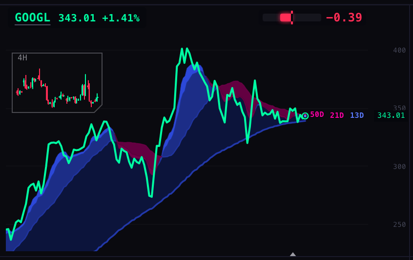
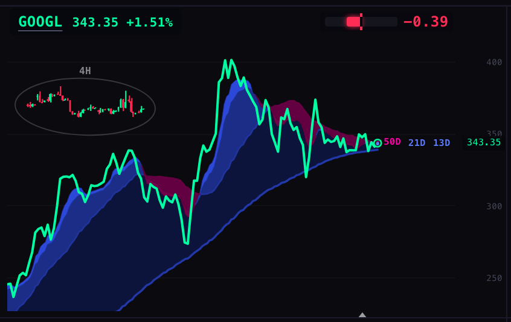
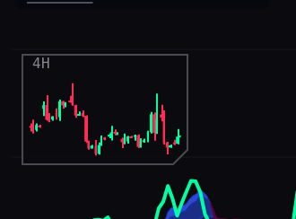
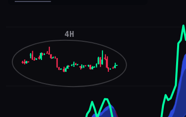
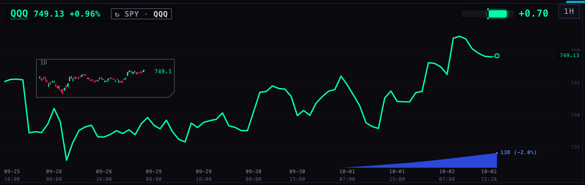
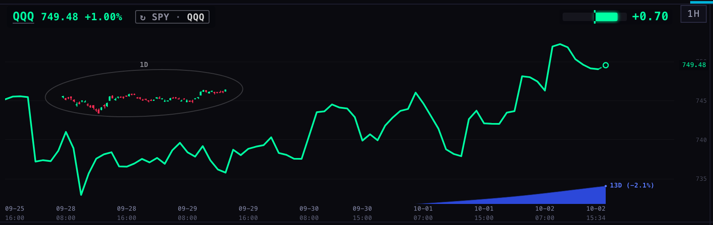
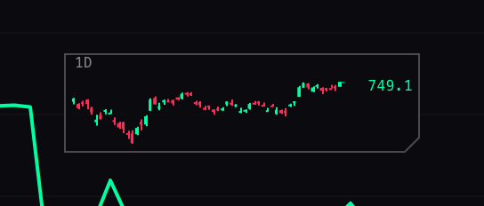
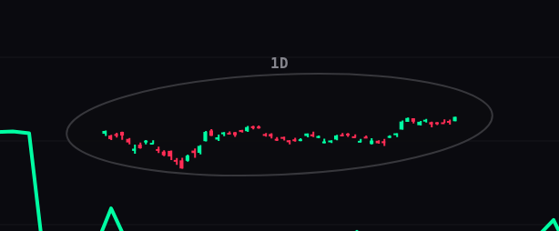
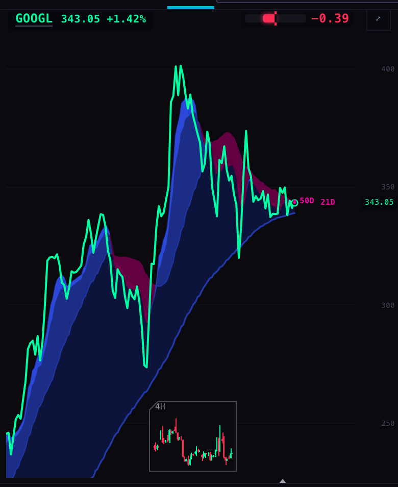
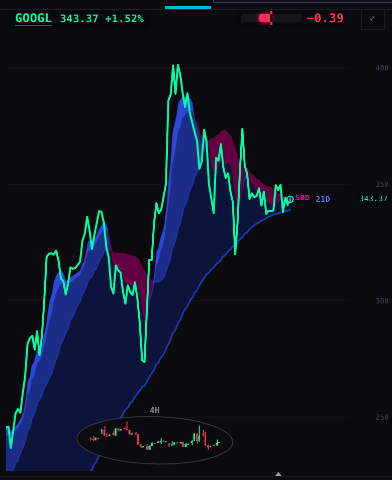
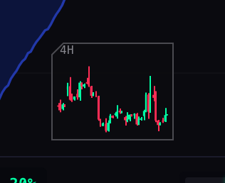
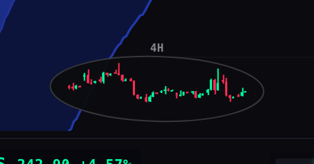
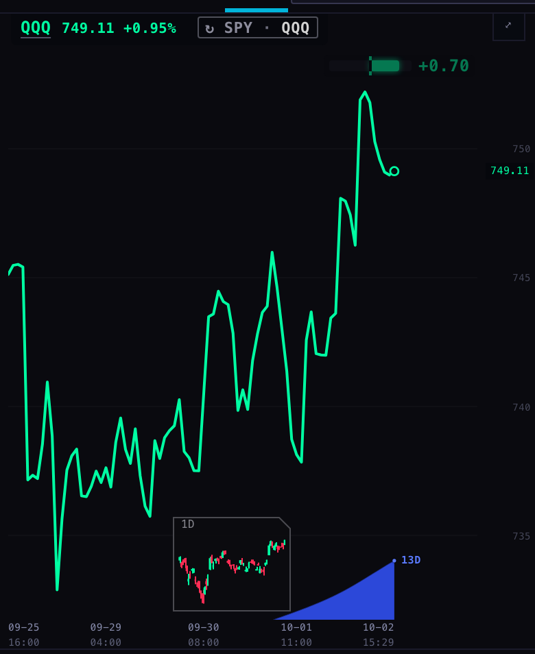
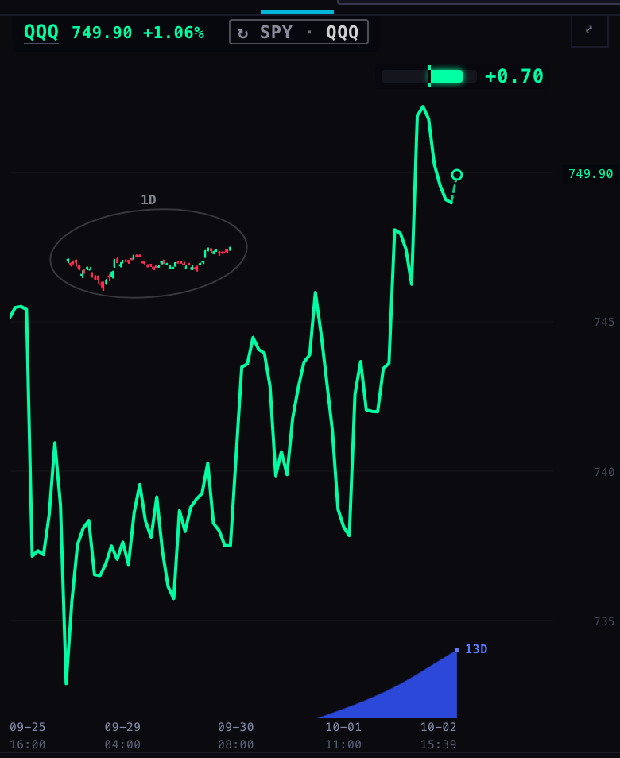
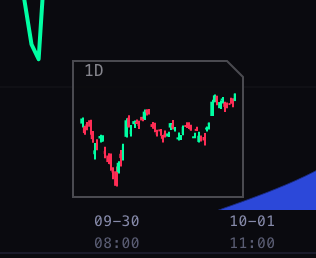
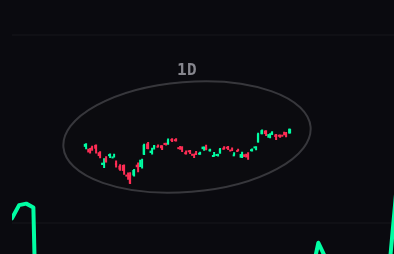
What the pictures show
Before: a card with a cut corner, 93 × 62 px on an 8-up pane, with the timeframe in its head. After: the same candles inside an oval whose long axis is 28% of the pane's width (40% on a phone) and runs from the first candle to the last — a rising series tilts the oval up to the right, a falling one down. The short axis is the least that keeps every candle inside, plus 3 px of air, in 4 px steps so a tick does not resize it. No card, no head: the timeframe (and STALE when the bars are old) sits in a small row above the oval. The forming (dashed) candle stays. The oval goes exactly where the card's rule put the card: the emptiest dark space, never over the newest fifth of the line, never on the ticker badge, the Geiger chip, the crosshair readout or the deck's arrows; bottom-left when that is as empty as anywhere; it holds its place until somewhere is clearly emptier.
Pixels covered, pane by pane (measured on the pictures above)
| wall | panes | covered before (card) | covered after (oval) | change | share of the pane, before → after |
|---|---|---|---|---|---|
| TARGETS · 3-day · 1680 wide | 8 panes | 44,012 | 35,288 | -20% | 5.0% → 4.0% |
| INTRADAY · 1H · 1680 wide | 4 panes | 42,022 | 36,914 | -12% | 4.8% → 4.2% |
| TARGETS · 3-day · phone 390 | 8 panes | 47,216 | 49,988 | +6% | 3.2% → 3.4% |
| INTRADAY · 1H · phone 390 | 4 panes | 23,608 | 24,504 | +4% | 3.2% → 3.3% |
TARGETS · 3-day · 1680 wide
| pane | pane size | covered before (card) | covered after (oval) | change | the oval: long × short, tilt | where the rule put it |
|---|---|---|---|---|---|---|
| GOOGL | 419×263 | 5,734 | 4,411 | -23% | 117 × 48 px, -2° | held: the emptiest dark space is not meaningfully emptier |
| NBIS | 419×263 | 5,734 | 4,411 | -23% | 117 × 48 px, +6° | held: the emptiest dark space is not meaningfully emptier |
| AVGO | 419×263 | 5,734 | 5,146 | -10% | 117 × 56 px, +7° | held: the emptiest dark space is not meaningfully emptier |
| BE | 419×263 | 5,734 | 4,411 | -23% | 117 × 48 px, +3° | held: the emptiest dark space is not meaningfully emptier |
| AMZN | 419×263 | 5,269 | 4,411 | -16% | 117 × 48 px, +2° | held: the emptiest dark space is not meaningfully emptier |
| VST | 419×263 | 5,269 | 3,676 | -30% | 117 × 40 px, -5° | held: the emptiest dark space is not meaningfully emptier |
| MU | 419×263 | 5,269 | 4,411 | -16% | 117 × 48 px, +11° | held: the emptiest dark space is not meaningfully emptier |
| WMT | 419×263 | 5,269 | 4,411 | -16% | 117 × 48 px, -7° | held: the emptiest dark space is not meaningfully emptier |
INTRADAY · 1H · 1680 wide
| pane | pane size | covered before (card) | covered after (oval) | change | the oval: long × short, tilt | where the rule put it |
|---|---|---|---|---|---|---|
| QQQ | 840×263 | 11,168 | 10,336 | -7% | 235 × 56 px, +3° | held: the emptiest dark space is not meaningfully emptier |
| BE | 840×263 | 8,518 | 10,336 | +21% | 235 × 56 px, +3° | held: the emptiest dark space is not meaningfully emptier |
| AMZN | 840×263 | 11,168 | 8,859 | -21% | 235 × 48 px, +0° | the emptiest dark space |
| VST | 840×263 | 11,168 | 7,383 | -34% | 235 × 40 px, -5° | bottom-left (preferred; as empty as anywhere) (nothing clear of the line was emptier) |
TARGETS · 3-day · phone 390
| pane | pane size | covered before (card) | covered after (oval) | change | the oval: long × short, tilt | where the rule put it |
|---|---|---|---|---|---|---|
| GOOGL | 390×473 | 5,902 | 5,881 | 0% | 156 × 48 px, -1° | held: the emptiest dark space is not meaningfully emptier |
| NBIS | 390×473 | 5,902 | 5,881 | 0% | 156 × 48 px, +5° | held: the emptiest dark space is not meaningfully emptier |
| AVGO | 390×473 | 5,902 | 7,841 | +33% | 156 × 64 px, +6° | held: the emptiest dark space is not meaningfully emptier |
| BE | 390×473 | 5,902 | 5,881 | 0% | 156 × 48 px, +3° | held: the emptiest dark space is not meaningfully emptier |
| AMZN | 390×473 | 5,902 | 6,861 | +16% | 156 × 56 px, +1° | held: the emptiest dark space is not meaningfully emptier |
| VST | 390×473 | 5,902 | 5,881 | 0% | 156 × 48 px, -4° | the emptiest dark space |
| MU | 390×473 | 5,902 | 5,881 | 0% | 156 × 48 px, +9° | held: the emptiest dark space is not meaningfully emptier |
| WMT | 390×473 | 5,902 | 5,881 | 0% | 156 × 48 px, -6° | held: the emptiest dark space is not meaningfully emptier |
INTRADAY · 1H · phone 390
| pane | pane size | covered before (card) | covered after (oval) | change | the oval: long × short, tilt | where the rule put it |
|---|---|---|---|---|---|---|
| QQQ | 390×473 | 5,902 | 6,861 | +16% | 156 × 56 px, +4° | held: the emptiest dark space is not meaningfully emptier |
| BE | 390×473 | 5,902 | 6,861 | +16% | 156 × 56 px, +4° | held: the emptiest dark space is not meaningfully emptier |
| AMZN | 390×473 | 5,902 | 5,881 | 0% | 156 × 48 px, +1° | held: bottom-left (preferred; as empty as anywhere) is not meaningfully emptier |
| VST | 390×473 | 5,902 | 4,901 | -17% | 156 × 40 px, -7° | bottom-left (preferred; as empty as anywhere) |
The whole wall
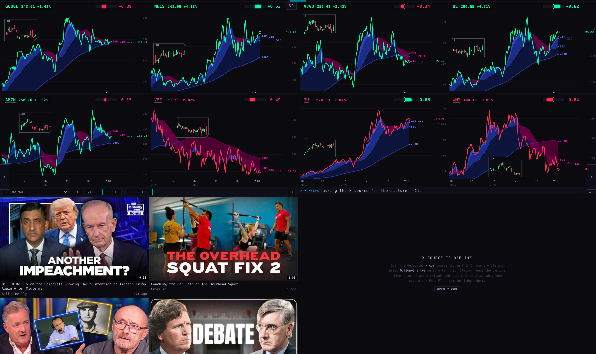
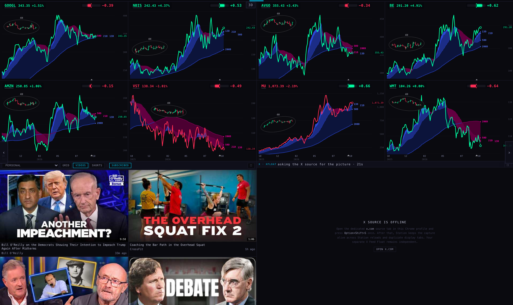
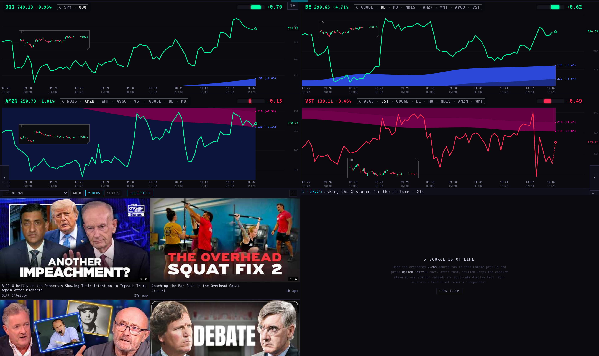
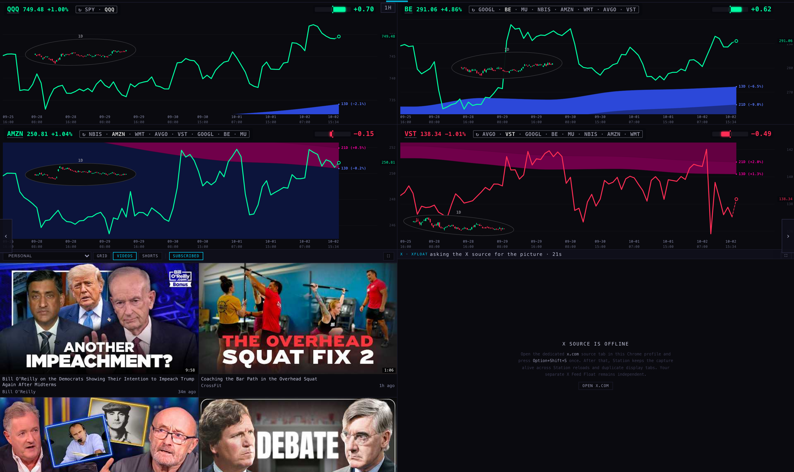
The switch
Deck → the ⋯ button (bottom of the dock's "more" drawer) → lens: oval or box. It is remembered in that browser and every chart on the wall follows at once; a second Station window follows too. A single pane can be forced with ?lens=box on its own address.
What could be wrong
- On a series whose first or last candle has a long wick, the oval has to grow taller to keep that wick inside (the tips of an oval are thin). It never grows taller than it is long.
- The oval's box is what the placement rule sees, so the rule is slightly more careful than it needs to be at the oval's corners (the corners of the box are empty).
- The phone test used the hidden browser's 390 px window; Alan's phone may give the pane a different width, and the long axis follows the pane.
What I did not do
- Not deployed; not opened on your screen. The live Station still draws the card until this branch is merged and deployed.
- The lens-placement workshop pages under deliverables/20260924 still draw the card (they are records, not the Station).
2 · The X-strip floor plan
"Station re-org proposal: X on the left in a strip, and at the bottom of the strip YouTube, perhaps a bit smaller than now — that makes the charts have more real estate. Analyzed at pixel level, like a floor plan in square feet."
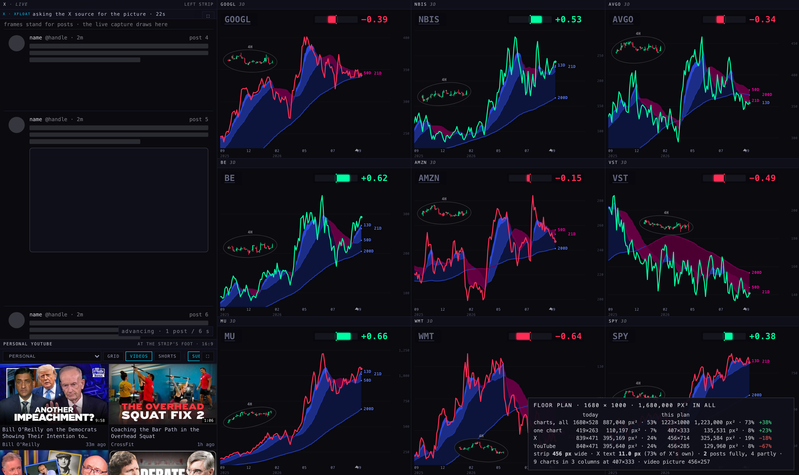
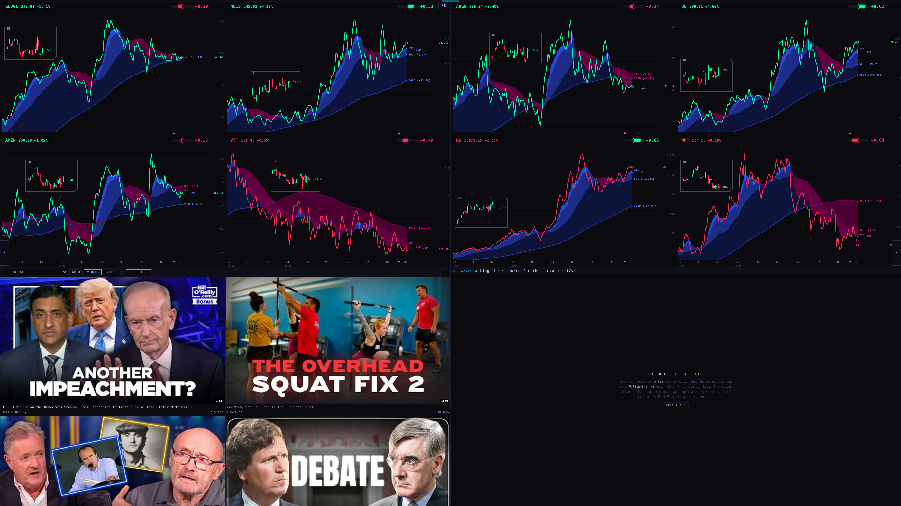
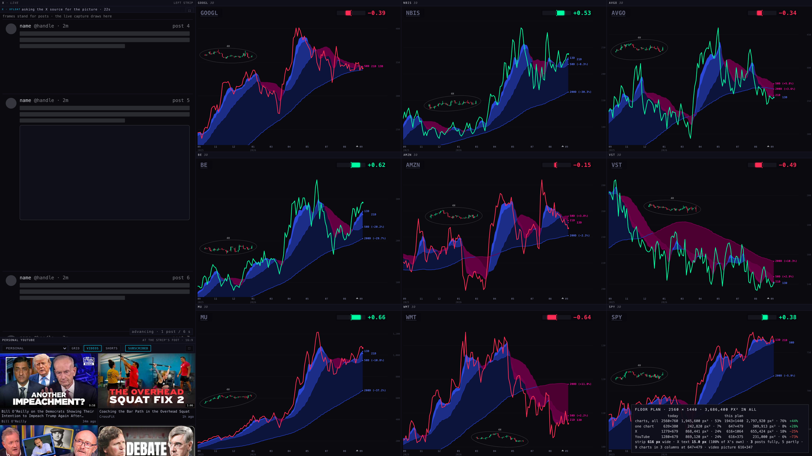
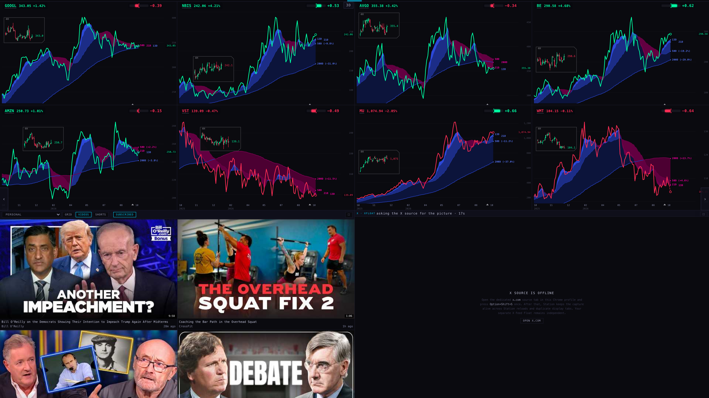
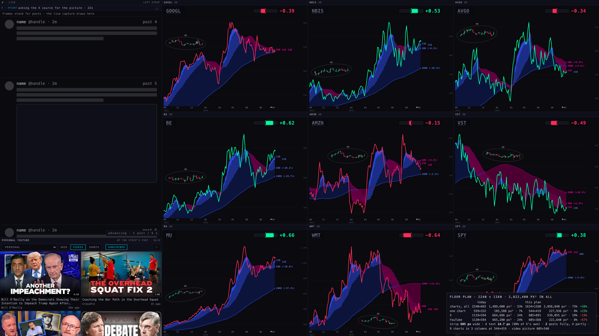

The floor, in square pixels
Today was measured on the live deck (scene TARGETS, eight charts, the dock tucked away as it is when the pointer is off it). The plan was measured on the mock page mock-x-strip.html, which mounts the Station's real chart, video and X shells in the new arrangement and prints its own numbers bottom-right. The X capture needs your Chrome, so in the hidden browser the strip shows frames drawn at X's real post sizes (a text post ≈ 215 px, a post with a picture ≈ 560 px, in X's 600 px column), scaled to the strip.
MacBook · 1680 × 1000 · 1,680,000 px² in all
| today (measured) | the X-strip plan (measured on the mock) | change | |
|---|---|---|---|
| charts, the whole wall | 887,040 px² · 52.8% | 1,223,000 px² · 72.8% | +38% |
| one chart (419×263 today → 407×333) | 110,197 px² · 6.6% | 135,531 px² · 8.1% | +23% |
| X | 395,169 px² · 23.5% | 325,584 px² · 19.4% | -18% |
| YouTube | 395,640 px² · 23.5% | 129,960 px² · 7.7% | -67% |
| chrome (gaps, bars) | 2,151 px² · 0.1% | 1,456 px² · 0.1% | -32% |
Strip 456 px wide · X text 11.0 px (73% of X's own 15 px) · 2 posts fully visible, 4 partly · video picture 456 × 257 (today 840 × 443) · 9 charts in 3 columns.
the MacBook's external · 2560 × 1440 · 3,686,400 px² in all
| today (measured) | the X-strip plan (measured on the mock) | change | |
|---|---|---|---|
| charts, the whole wall | 1,945,600 px² · 52.8% | 2,797,920 px² · 75.9% | +44% |
| one chart (639×380 today → 647×479) | 242,820 px² · 6.6% | 309,913 px² · 8.4% | +28% |
| X | 868,441 px² · 23.6% | 655,424 px² · 17.8% | -25% |
| YouTube | 869,120 px² · 23.6% | 231,000 px² · 6.3% | -73% |
| chrome (gaps, bars) | 3,239 px² · 0.1% | 2,056 px² · 0.1% | -37% |
Strip 616 px wide · X text 15.0 px (100% of X's own 15 px) · 3 posts fully visible, 5 partly · video picture 616 × 347 (today 1280 × 651) · 9 charts in 3 columns.
the iMac · 2240 × 1260 · 2,822,400 px² in all
| today (measured) | the X-strip plan (measured on the mock) | change | |
|---|---|---|---|
| charts, the whole wall | 1,489,600 px² · 52.8% | 2,058,840 px² · 72.9% | +38% |
| one chart (559×332 today → 544×419) | 185,588 px² · 6.6% | 227,936 px² · 8.1% | +23% |
| X | 664,686 px² · 23.6% | 539,055 px² · 19.1% | -19% |
| YouTube | 665,280 px² · 23.6% | 222,640 px² · 7.9% | -67% |
| chrome (gaps, bars) | 2,834 px² · 0.1% | 1,865 px² · 0.1% | -34% |
Strip 605 px wide · X text 14.7 px (98% of X's own 15 px) · 2 posts fully visible, 4 partly · video picture 605 × 340 (today 1120 × 566) · 9 charts in 3 columns.
The rules the plan follows
- The strip's width keeps an X post readable: X's natural column is 600 px with 15 px text; the floor for text is 11 px, so the narrowest readable strip is 600 × 11⁄15 + 16 px of padding = 456 px. The rule is clamp(456 px, 27% of the screen, 616 px) — 456 at 1680, 605 on the iMac, 616 (X at its own size) on the external.
- YouTube at the strip's foot: as wide as the strip, a true 16:9 picture under the player's 28 px bar, no black bars. At 1680 that is a 456 × 257 picture against today's 840 × 443 — smaller, as you said, and the thumbnail grid above it keeps two columns.
- The charts take everything right of the strip. Nine slots in three columns keep a chart's shape (the eight TARGETS and SPY in the ninth); four columns would make each chart tall and narrow (305 × 499 at 1680).
- Phone: one column that scrolls, as the Station already does — the charts first, then the strip as a block, then the video.
What I did not do
- The live deck layout is untouched. The mock is a proposal page, not a Station page.
- The X strip's posts are frames; the real capture was not run (it needs your Chrome and the X bridge, which I did not touch).
3 · Decisions for you (three)
- The strip's width. 456 px at 1680 (text at the 11 px floor, 2 posts fully visible), growing to X's own size on the big screens. Recommendation: yes, this rule — narrower and the posts stop being readable; wider costs the charts their gain.
- The YouTube size. As wide as the strip (a 16:9 picture 456 × 257 at 1680) or smaller still (say 70% of the strip, leaving room for more posts). Recommendation: strip-wide — a smaller player stops being watchable, and the strip already shows several posts above it.
- Phones. Whether the strip collapses on a phone (the mock stacks it under the charts, as the Station does) or stays beside them as a thin rail. Recommendation: stack it — a 390 px screen cannot hold a readable post beside a chart.